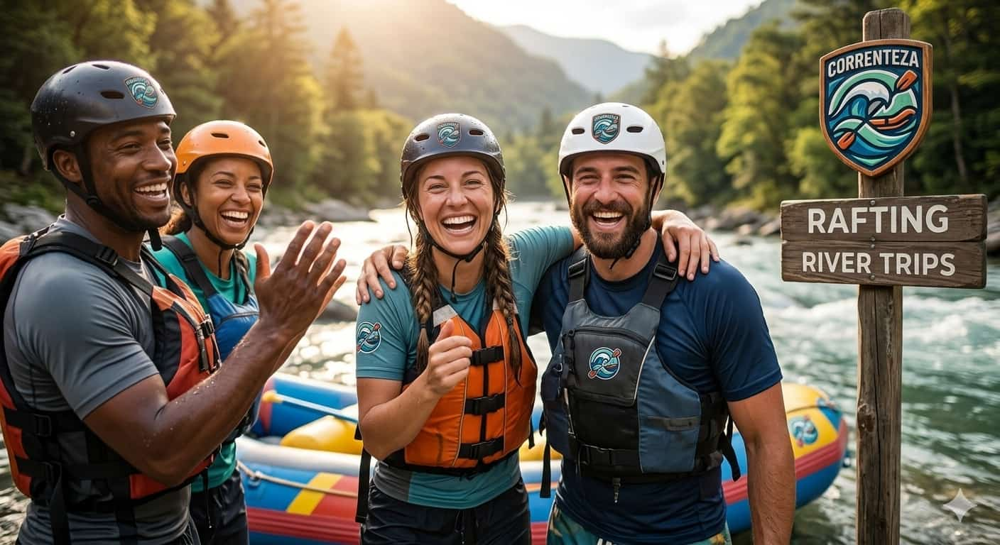
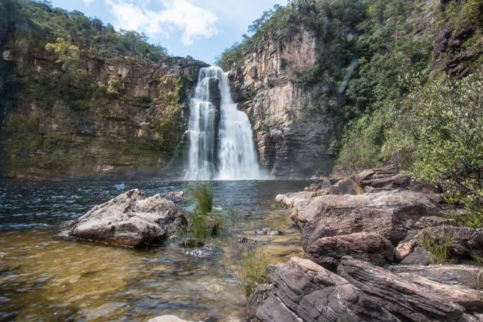
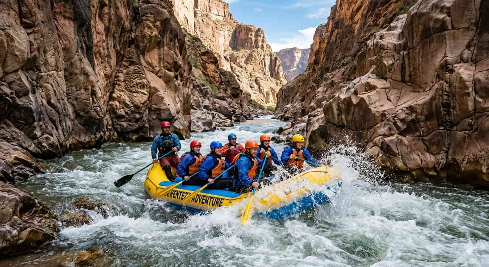
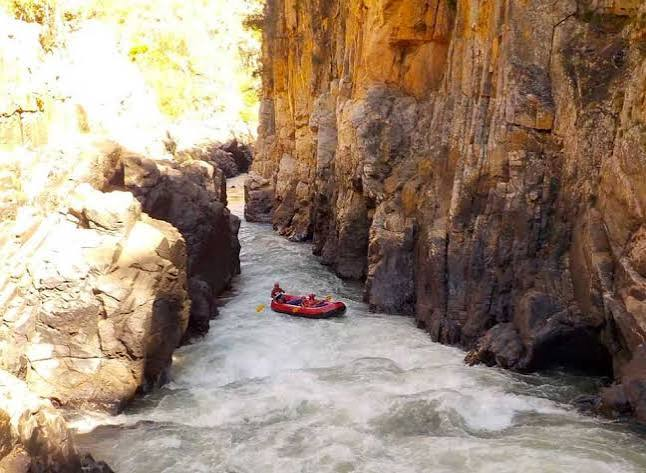

Sobre a nossa aventura
Nossa missão é proporcionar a melhor e mais segura experiência de rafting do Brasil, conectando pessoas à natureza através da adrenalina e do companheirismo nas corredeiras.

Nossa missão é proporcionar a melhor e mais segura experiência de rafting do Brasil, conectando pessoas à natureza através da adrenalina e do companheirismo nas corredeiras.

A Correnteza Adventure nasceu in 2018 da paixão de três amigos de infância por esportes radicais e ecoturismo. O que começou como descidas informais de fim de semana in rios desafiadores rapidamente se transformou em uma missão de vida: compartilhar a emoção do rafting com o mundo. Hoje, somos referência em turismo de aventura, guiando milhares de corações corajosos pelas corredeiras mais impressionantes da região, sempre unindo adrenalina pura com os mais rígidos padrões internacionais de segurança ambiental e operacional.




